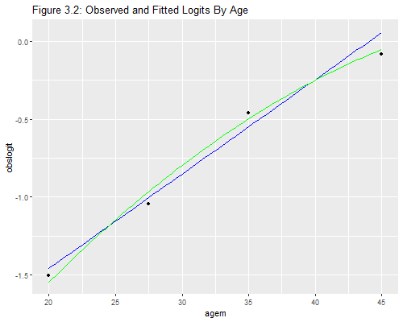

{% include r.css %}


<div id="the-comparison-of-several-groups" class="section level2">
<h2>3.4 The Comparison of Several Groups</h2>
<p>We now consider the comparison of more than two groups. We will
illustrate using the data on contraceptive use by age, where we compare
four groups.</p>
<p>.include style</p>
<div id="a-k-by-two-table" class="section level3">
<h3>A k-by-two Table</h3>
<p>These are the data on page 18 of the notes, entered as four age
groups</p>
<pre class="r"><code>&gt; library(dplyr)
&gt; cuse &lt;- data.frame(matrix(c(
+ 1,  72, 325,
+ 2, 105, 299,
+ 3, 237, 375,
+ 4,  93, 101), 4, 3, byrow=TRUE))
&gt; names(cuse) &lt;- c(&quot;ageg&quot;, &quot;users&quot;, &quot;nonusers&quot;)
&gt; cuse &lt;- mutate(cuse, n = users + nonusers,
+   ageg = factor(ageg, labels=c(&quot;&lt; 25&quot;,&quot;25-29&quot;,&quot;30-39&quot;,&quot;40-49&quot;)),
+   Y = cbind(users, nonusers))
&gt; cuse</code></pre>
<pre><code>   ageg users nonusers   n Y.users Y.nonusers
1  &lt; 25    72      325 397      72        325
2 25-29   105      299 404     105        299
3 30-39   237      375 612     237        375
4 40-49    93      101 194      93        101</code></pre>
</div>
<div id="the-one-factor-model" class="section level3">
<h3>The One-Factor Model</h3>
<p>Here is the model treating age as a factor with four levels, which is
of course saturated for the data.</p>
<pre class="r"><code>&gt; mageg = glm(Y ~ ageg, family=binomial, data=cuse)
&gt; summary(mageg)</code></pre>
<pre><code>
Call:
glm(formula = Y ~ ageg, family = binomial, data = cuse)

Deviance Residuals: 
[1]  0  0  0  0

Coefficients:
            Estimate Std. Error z value Pr(&gt;|z|)    
(Intercept)  -1.5072     0.1303 -11.571  &lt; 2e-16 ***
ageg25-29     0.4607     0.1727   2.667  0.00765 ** 
ageg30-39     1.0483     0.1544   6.788 1.14e-11 ***
ageg40-49     1.4246     0.1940   7.345 2.06e-13 ***
---
Signif. codes:  0 &#39;***&#39; 0.001 &#39;**&#39; 0.01 &#39;*&#39; 0.05 &#39;.&#39; 0.1 &#39; &#39; 1

(Dispersion parameter for binomial family taken to be 1)

    Null deviance: 7.9192e+01  on 3  degrees of freedom
Residual deviance: 2.1405e-13  on 0  degrees of freedom
AIC: 32.647

Number of Fisher Scoring iterations: 3</code></pre>
<p>Compare the parameter estimates with those on Table 3.5 of the notes.
Can you obtain these estimates by hand directly from the raw
frequencies? We see that the odds of using contraception increase
steadily from one age group to the next.</p>
<p>To test the significance of the age effects we can use a likelihood
ratio test comparing this model with the null, or a Wald test. Let us
start with the former. The <code>summary()</code> function reports the
residual deviances for the null and current models, so the reduction in
deviance is easily seen, but I will calculate it explicitly for
clarity.</p>
<pre class="r"><code>&gt; deviance(glm(Y ~ 1, family=binomial, data=cuse)) # minus 0</code></pre>
<pre><code>[1] 79.19173</code></pre>
<p>The value of 79.19 on 3 d.f. means that we can reject the hypothesis
that the probability of using contraception is the same in the four age
groups.</p>
<p>Now for the Wald test, which is easily calculated from first
principles using the coefficients and their variance matrix. Here’s the
test for the age effect on page 20 of the notes:</p>
<pre class="r"><code>&gt; b &lt;- coef(mageg)[-1]
&gt; V &lt;- vcov(mageg)[-1,-1]
&gt; t(b) %*% solve(V) %*% b </code></pre>
<pre><code>         [,1]
[1,] 74.35663</code></pre>
<p>Once again the likelihood ratio and Wald test are similar, but not
identical.</p>
<p>Finally, we will compute the fitted logits, which we will need later.
We can do this using the <code>predict()</code> function, which makes
predictions in the logit scale.</p>
<pre class="r"><code>&gt; cuse &lt;- mutate(cuse, obslogit = predict(mageg)) # or qlogis(users/n)</code></pre>
</div>
<div id="a-one-variate-model" class="section level3">
<h3>A One-variate Model</h3>
<p>We will now treat age as a covariate, using the mid-points of the
four age groups; so we treat the group 15-24 as 20, 25-29 as 27.5, 30-39
as 35 and 40-49 as 45. (If these don’t look like mid-points to you, note
that age is usually reported in completed years, so 15-24 means between
15.0 and 25.0, and the mid-point is 20.0.) The easiest way to code the
midpoints in this example is by using the age group numeric codes as
indices into a vector of midpoints.</p>
<pre class="r"><code>&gt; cuse &lt;- mutate(cuse, agem = c(20, 27.5, 35, 45)[as.numeric(ageg)])</code></pre>
<p>We can now fit the model on page 20 of the notes, which has a linear
effect of age:</p>
<pre class="r"><code>&gt; magem &lt;- glm(Y ~ agem, family=binomial, data=cuse)
&gt; summary(magem)</code></pre>
<pre><code>
Call:
glm(formula = Y ~ agem, family = binomial, data = cuse)

Deviance Residuals: 
      1        2        3        4  
-0.3697  -0.3739   1.0845  -0.9750  

Coefficients:
             Estimate Std. Error z value Pr(&gt;|z|)    
(Intercept) -2.672667   0.233249 -11.458   &lt;2e-16 ***
agem         0.060671   0.007103   8.541   &lt;2e-16 ***
---
Signif. codes:  0 &#39;***&#39; 0.001 &#39;**&#39; 0.01 &#39;*&#39; 0.05 &#39;.&#39; 0.1 &#39; &#39; 1

(Dispersion parameter for binomial family taken to be 1)

    Null deviance: 79.1917  on 3  degrees of freedom
Residual deviance:  2.4034  on 2  degrees of freedom
AIC: 31.05

Number of Fisher Scoring iterations: 3</code></pre>
<pre class="r"><code>&gt; exp(coef(magem)[&quot;agem&quot;])</code></pre>
<pre><code>    agem 
1.062549 </code></pre>
<p>We see that older women are more likely to use contraception, and
that the <em>odds</em> of using contraception are about six percent
higher for every year of age. (This comes from exponentiating the
coefficient of age, which is now measured in years.)</p>
<p>We can formaly test the assumption of linearity using a likelihood
ratio test to compare this model with the saturated model of the
previous section. The test can be calculated using the
<code>anova()</code> function, or calling <code>logLik()</code>
directly.</p>
<pre class="r"><code>&gt; -2*(logLik(magem)-logLik(mageg))</code></pre>
<pre><code>&#39;log Lik.&#39; 2.403352 (df=2)</code></pre>
<p>The chi-squared statistic of 2.4 on one d.f. is not significant,
indicating that we have no evidence against the assumption of linearity,
and can happily save two degrees of freedom. This statistic is, of
course, the deviance for the model with a linear effect of age.</p>
<p>We can also calculate the deviance “by hand” from first principles,
using the “sum of observed times log(observed/expected)” formula . Just
remember that you need to use observed and expected <em>counts</em> of
both successes and failures, here users and non-users:</p>
<pre class="r"><code>&gt; mutate(cuse, pusers = fitted(magem)*n) |&gt; 
+   summarize(dev = 2*sum(users*log(users/pusers) + 
+     (n-users)*log((n-users)/(n-pusers))))</code></pre>
<pre><code>       dev
1 2.403352</code></pre>
</div>
<div id="observed-and-fitted-logits" class="section level3">
<h3>Observed and Fitted Logits</h3>
<p>The next step will be to compute fitted logits based on this model,
and use them together with the observed logits calculated earlier to
examine visually the adequacy of the linear specification, effectively
reproducing Figure 3.2 in the notes. For added measure I will also
consider a model with a quadratic term, centering age around 30 before
squaring it, so the linear term reflects the slope at 30.</p>
<pre class="r"><code>&gt; library(ggplot2)
&gt; cuse &lt;- mutate(cuse, agemcsq = (agem - mean(agem))^2)
&gt; magesq &lt;- glm(Y ~ agem + agemcsq, family=binomial, data=cuse)
&gt; b &lt;- coef(magesq)
&gt; f1 &lt;- function(x) coef(magem)[1] + coef(magem)[2]*x
&gt; f2 &lt;- function(x) b[1] + b[2]*x + b[3]*(x-mean(cuse$agem))^2
&gt; png(&quot;fig32r.png&quot;, width=500, height=400)
&gt; ggplot(cuse, aes(agem, obslogit)) + geom_point() +
+   geom_function(fun=f1, color=&quot;blue&quot;) + 
+   geom_function(fun=f2, color=&quot;green&quot;) +
+   ggtitle(&quot;Figure 3.2: Observed and Fitted Logits By Age&quot;)
&gt; dev.off()</code></pre>
<pre><code>png 
  2 </code></pre>
<p></p>
<p>The graph shows that the linear specification was adequate. There is
a hint that a quadratic model might be better, particularly in terms of
the fit for the oldest age group, but the quadratic term is not
significant.</p>
<p>You may wonder why I used functions to graph the fitted lines.
Plotting the fitted values joined by line segments works fine for the
linear model, but doesn’t reflect well the curvilinearity of the
quadratic model, which is better represented using a function based on
the coefficients.</p>
<p>This analysis gives us a quick indication of whether we could treat
age linearly if we were working with individual data and had the actual
ages of the 1607 women. It is not equivalent, however, because we have
grouped age, and therefore treated all women men aged 25-29 as if they
were age 27.5. With individual data some would be 25, some 26, etc.</p>
<p>You may also wonder why we were able to do a likelihood ratio test,
when a model treating age linearly is usually not nested in a model that
treats it as a factor. The answer is that in this case both
specifications are applied to grouped data. You can view the linear
model as imposing constraints, where the differences betwen the age
groups are proportional to the difference in years between their
midpoints. Alternatively, you can view the model that treats age as four
groups as equivalent to having linear, quadratic, and cubic terms on the
midpoints. Go ahead, try it. I’ll wait.</p>
<p><small>Updated fall 2022</small></p>
</div>
</div>
